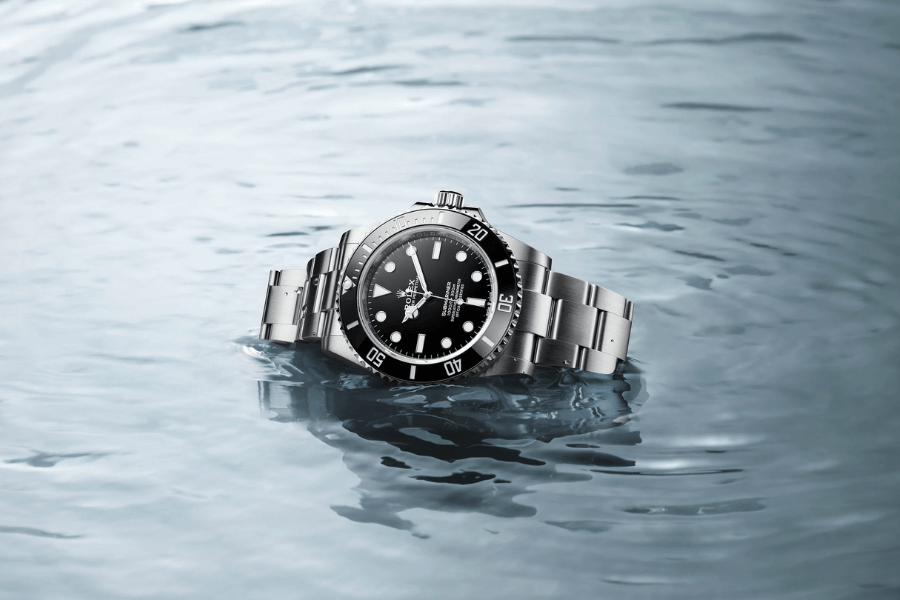

Yacht-Master
Geïnspireerd door het rijke erfgoed dat Rolex al sinds de jaren 50 met de zeilwereld verbindt, belichamen de Yacht-Master en Yacht-Master II de maritieme geest van het merk. De Yacht-Master is een briljante combinatie van functie en nautische stijl. De Yacht-Master II, die in 2007 werd gepresenteerd, is een regatta-chronograaf die speciaal is gemaakt voor zeilwedstrijden.

- Specificaties
- Prijs: $3.917
- Opwinden: Handopwind
- Bouwjaar: 1997
- Referentienummer: 3570.50.00
- Hoogte: 13.8mm
- Waterdicht:5 ATM
- Glas: Kuntstof
- Diameter: 42mm